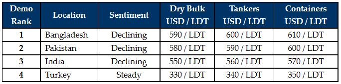

inWeekly Demolition Reports20/12/2021

Sub-continent ship recycling markets (including Turkey) remained in a precarious position this week, with the recent decline in steel plate prices mixed in with the crushing depreciation of currencies that has led to a serious dearth in the global demand for tonnage.
As a result, there have still not been any noteworthy sales at these new lower levels to justify some of the alarming news emanating from sub-continent markets, and it does seem that much of what we are hearing is far more dramatic than current realities on the ground.
Steel plate prices in India have collapsed by over USD 60/LDT in recent weeks. Yet, sales of stainless-steel units (in particular) continue at ever impressive numbers to Alang Recyclers. This is likely because the non-ferrous market is comparatively more specialized and is somewhat insulated from the wider steel markets.
On the currencies front, the Turkish Lira and the Pakistani Rupee have both depreciated to their (respective) highest ever levels against the U.S. Dollar – continuing an ongoing theme with the depreciations that we have seen for much of this year.
Notwithstanding, the markets still saw several units reportedly sold to Gadani Recyclers from existing Cash Buyer inventories and at solid numbers to boot – those not too far from where Bangladesh currently is.
Chattogram has seen a number of vessels arrive and beach over recent tides – including several larger LDT units / VLCCs / FSUs – and so it is perhaps understandable to see a weakening Bangladeshi demand as most Recyclers seek to monitor competing markets and re-adjust / lower their numbers accordingly, hoping to acquire a bargain or two.
Overall, the overriding feeling is that fundamentals have not declined so dramatically in most of the sub-continent markets that justify some of the opportunistic and lower levels currently on show, and given a period of festivities / Christmas respite, we may see markets come roaring back as the industry heads into the New Year.
For week 52 of 2021, GMS demo rankings / pricing for the week are as below.

Download PDFSource: GMS,Inc. (https://www.gmsinc.net/gms_new/index.php/web)